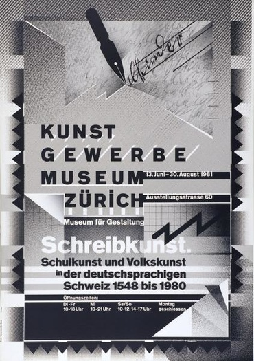
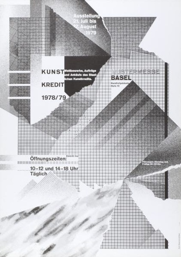
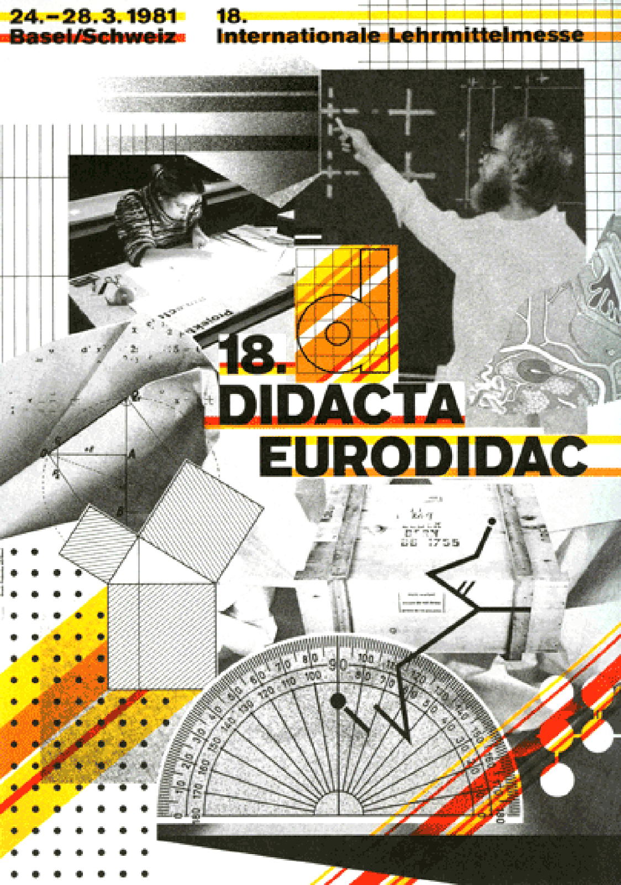
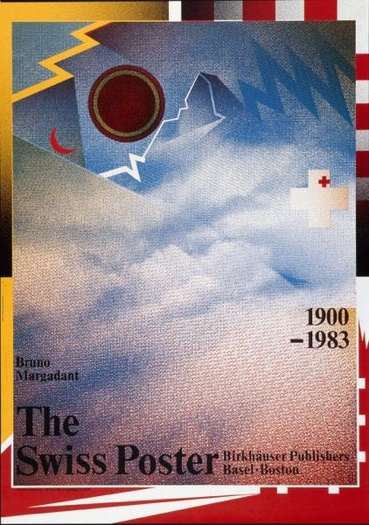
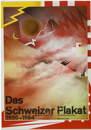
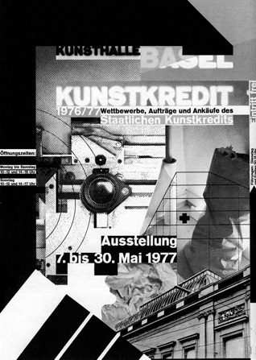

WOLFGANG WEINGART


“What's the use of being legible, when nothing inspires you to take notice of it?”
Introduction
Wolfgang Weingart is an internationally known graphic designer and typographer who is regarded as the “enfant terrible” of modern Swiss typography. He is credited with developing the ‘New Wave’ typography in the early 1970s which is also dubbed as ‘Swiss Punk’. Weingart is also famous for his experimental and expressive work that broke the mould of classical Swiss typography.
Childhood
Wolfgang Weingart was born in February 1941 in a valley near Lake Constance, the Salem Valley, in Germany close to the Swiss border. Wolfgang describes this as “the most important time of his life”.
Late in 1947 Weingart started primary school, it was around this time, after manipulating a piece of wire to form images such as the outlines of a house, a motorbike and a landscape, that he became aware of his interest in the area of visual design.
In April 1954 he moved to Portugal and lived in Lisbon for 2 years, here he enrolled in the German School of Lisbon and his artistic inclination was noticed by his teacher who gave him private lessons to help nurture his artistic talent.
Education
In April 1958, at the age of 17, Weingart began a two-year course in the area of applied art and design. He was very eager to learn about the process of sketching and planning for linoleum and woodcuts, both which are printmaking techniques. He was also very interested in handsetting type and printing. During his free time he continued to work on personal projects that included working with setting type and print. During this time he first encountered metal type. Wolfgang stated that during this moment that he, “could not foresee the potential, nor the creative freedom that awaited the typesetter with our twenty-six movable letters and their affiliated signs.”
In 1960 Weingart began a three-year typesetting apprenticeship at Ruwe Printing. During this time he became familiar with Swiss typography which inspired him and also enlivened his years as an apprentice.
While setting type it was like a childhood pleasure for Weingart as the methodical procedure brought back childhood memories. At this time he was very focused on Swiss typography however he became intrigued by the poster ‘Giselle’ designed in 1959 as he thought that the way the word Giselle was vertically arranged was both unabashed and courageous. Here was the first time he perceived the meaning of unity between type and image.
It was at this time that Wolfgang mastered the techniques of letterpress printing and began to get more experimental with his work with letters and type elements in round compositions. He also began to experiment with unusual letter spacing and the repetition of words on a singular page. In 1962 he chose to experiment with the letter ‘M’, this was an independent project that would follow him and interest him for many years to come. It was curiosity that influenced him to combine new signs with the letter ‘M’ and to experiment with changing its size, positions on the pages surfaces and also its angles. He learned to manipulate the letter he had chosen; bending it, twisting it, recreating it, deconstructing it and working with the space within the pages themselves.
In 1963 Weingart then moved to Basel on Switzerland where he enrolled in the Basel School of design, the origin of the classical ‘Swiss Typography’.
Swiss Typography
In the 1950s there was a full emergence of a design movement that is seen by many as the most important graphic design style of the twentieth century. It began in Switzerland and German, and although sometimes called ‘Swiss typography’, it is also often referred to as the ‘International typographic style’ due to being globally recognised, Swiss Typography had become synonymous with corporate design as Swiss style emphasizes on being neat and eye-catching, and on its readability and objectivity. It is also identified for its immense simplicity and exhortation to beauty and purpose. These two principles are achieved by using asymmetric layouts, grids, sans-serif typefaces, left-flushes and simple but effective photography. These elements are produced in a simple but highly logical, structured, stiff and harmonious manner.
Teaching
Weingart is known to have a rebellious mind-set and has liked to push the limits of what is considered as ‘the norm’ and from an early stage he broke the typographic rules by freeing letters from their restricting design grids. He spaced them, underlined them or reshaped them and reorganized type-setting.
Weingart believed that the development of the Swiss Typography was becoming stagnant as it was sterile and anonymous. His goal was to breathe new life into the teaching of new typography. He believed that the only way to break typographic rules was to know them; an advantage he gained from his apprenticeship.
He encouraged his students to look and experiment with, not only the basic design relationships with type placement, size and weight, but also with letter spacing, with the goal to test the limits of readability. He allowed his students to have the freedom to experiment and create in an expressionistic manner allowing certain graphic modifications of type thus intensifying meaning. Due to this his students dubbed this style as ‘Weingart style’, although Weingart states that he never forced any style on his students, and also did not set out to create a style.
"I took 'Swiss Typography' as my starting point, but then I blew it apart, never forcing any style upon my students. I never intended to create a 'style'. It just happened that the students picked up—and misinterpreted—a so-called 'Weingart style' and spread it around.”
The results of this experimentation conceived the realisation that with increased space between letters, the words became graphic in expression and the message became less dependent upon reading than they had supposed. This act of experimenting challenged the role of typography, according to Emil Ruder, “Typography has one plain duty before it and that is to convey information in writing . . . A printed work which cannot be read becomes a product without purpose.”
This new style, or approach to typography that came from his students, became more popular and led to a new generation of designers that approached most design in an entirely different manner than traditional Swiss typography.
New Wave
This new style of typography is the stylistic movement where graphic designers moved away from the International Style. Focusing more on playfulness than the grid, these ‘New Wave’ typographers pathed the way for future designers to explore graphic design. The style itself actively defies the strict grid-based arrangement conventions of the ‘Swiss typography’. Characteristics of this new style include all the aspects that Wolfgang taught his students to experiment with, including; inconsistent letter spacing, varying type weights within single words and type set at non-right angles.
The ‘New Wave’ differs from the International typographic style by stretching the limits of legibility. By ignoring the grid structure, this meant that type could be placed centre, to the left or the right, or be chaotic. This gave the artist the freedom they wanted or needed to express themselves. The text also became textured with the development of transparent film and the increase in collage in graphic design, a style that is very prominent in Wolfgang’s work as himself mounted halftone films to form collages for many of his posters.
The practitioners of this new style, also called Swiss punk designers, disagreed with the less is more and minimalist philosophy, by ascribing that typography can play a more expressive role and that this increase in expression aimed to improve communication. Therefore, New Wave designers such as Weingart felt intuition was just as valuable as analytical skill in composition.
Work
Weingart’s ‘new wave’ work and thinking included letter spacing, bold stair-stepped rules, rule lines punctuating space, diagonal type, mixing typefaces or weight changes within words, and type reversed from a series of bars. His work is very experimental and included experimenting with the offset printing processes to produce posters that appeared both complex and chaotic but also playful and spontaneous resulting in unusual textures and building up images within his posters. These posters then became his most famous and admired works and in creating these posters, Weingart revived the techniques inspired by Dada collage and photo montage by layering images and type that had been photographed. One of his most famous posters and most experimental practises was in the making of his 1984 exhibition poster of the 'Matterhorn' which he created by crumpling up tissue and photocopying it to get a range of shapes, tones and textures.
     Epilogue
Throughout his career Wolfgang has become a very well-known and successful designer that helped change the area of Design by influencing others to break apart the norms and to experiment more with their work. Wolfgang started out with the aim to create his own work and to explore the world of design, which lead to the accidental creation of a new style that continues to influence other designers until this day.
REFERENCES
TOP 6 QUOTES BY WOLFGANG WEINGART | A-Z Quotes : http://www.azquotes.com/author/65433-Wolfgang_Weingart
Weingart Typography : http://www.museum-gestaltung.ch/en/exhibitions/review/2014/weingart-typography/
Wolfgang Weingart - Wikipedia, the free encyclopedia : https://en.wikipedia.org/wiki/Wolfgang_Weingart
Wolfgang Weingart : Design Is History : http://www.designishistory.com/1960/wolfgang-weingart/
New Wave (design) - Wikipedia, the free encyclopedia : https://en.wikipedia.org/wiki/New_Wave_(design)
The Setting | The New Wave Type : https://thenewwavetype.wordpress.com/category/the-setting/
The Rockstars | The New Wave Type : https://thenewwavetype.wordpress.com/category/the-rockstars/
AIGA | Video: AIGA Medalist Wolfgang Weingart : http://www.aiga.org/video-medalist-wolfgang-weingart/
What is Swiss Style Typography? : http://www.1stwebdesigner.com/swiss-style-typography/
The International Typographic Style : http://www.howdesign.com/featured/international-typographic-style-brief-history/
weingart (2000). typography. switzerland: lars muller